Wie zou jij de aux geven? Start de test 1- Welk nummer zou je luisteren op je beste dag van de week? Half.alive - Still fee Harry Styles - Kiwi 2- Welk nummer gepresenteerd jou als je boos bent? YoungRubbi - Gestrekt been Turnstile - Blackout 3- Welk nummer zet je op als main character die door de stad loopt? The Driver Era - Preach Froukje - Ik wil dansen 4- Welk nummer zet je eerder op als je even echt wilt schreeuwen? Halestorm - Miss the misery My chemical romance - Teenagers 5- Welk nummer zou je helemaal mee willen kunnen zingen? Nothing but thieves - Is everybody crazy Eminem - The real slim shady 6- Welk nummer zou eerder je guilty pleasure zijn? One direction - Midnight memories ABBA - Gimme Gimme Gimme Let's find out!  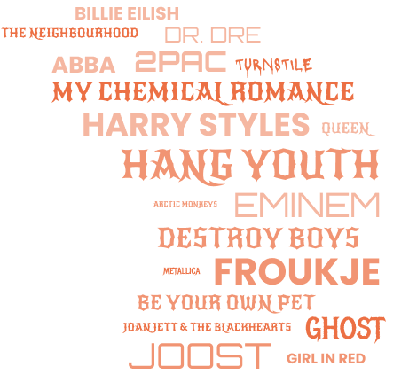 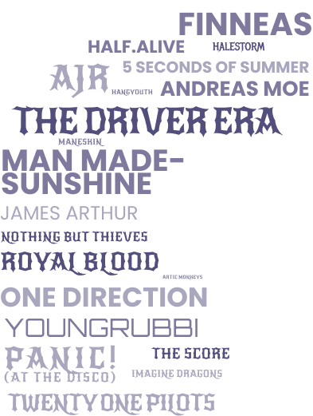
1- Welk nummer zou je luisteren op je beste dag van de week? Half.alive - Still fee Harry Styles - Kiwi
3- Welk nummer zet je op als main character die door de stad loopt? The Driver Era - Preach Froukje - Ik wil dansen
4- Welk nummer zet je eerder op als je even echt wilt schreeuwen? Halestorm - Miss the misery My chemical romance - Teenagers
5- Welk nummer zou je helemaal mee willen kunnen zingen? Nothing but thieves - Is everybody crazy Eminem - The real slim shady
6- Welk nummer zou eerder je guilty pleasure zijn? One direction - Midnight memories ABBA - Gimme Gimme Gimme

 
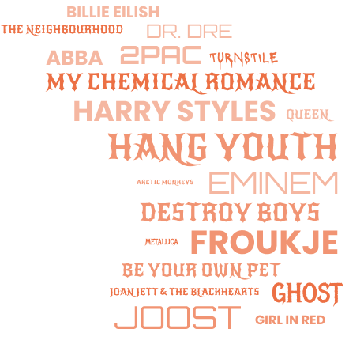
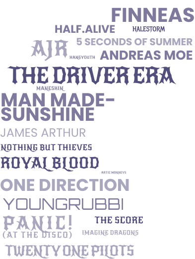
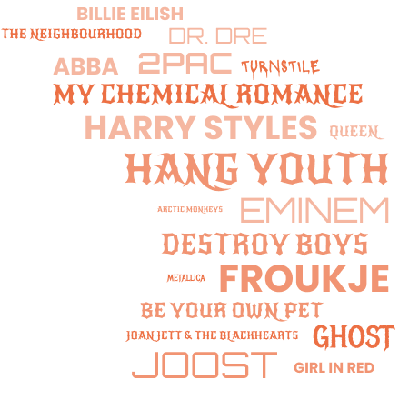
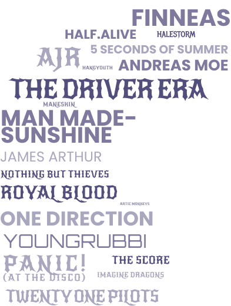
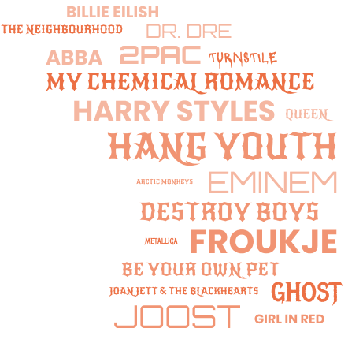
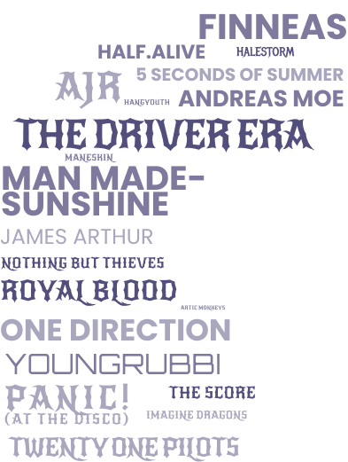
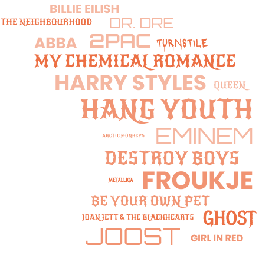
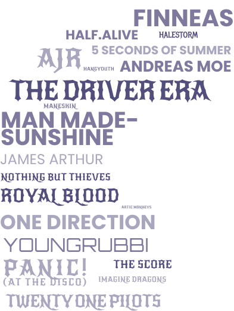